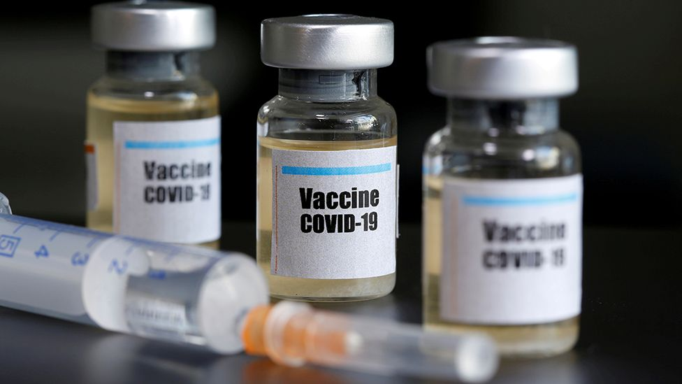

Most Recent News
Despite Trump’s Venting and Threats, Biden’s Win Is Sealed
PUBLISHED 10 DECEMBER 2020
The drive to overturn President-elect Joe Biden’s victory over President Donald Trump in the battleground state of Pennsylvania is forcing Republicans to take positions that contradict with one another’s.
Pfizer COVID-19 Vaccine Faces Last Hurdle Before US Decision

PUBLISHED 9 DECEMBER 2020
The Dec. 10 meeting of the Food and Drug Administration’s vaccine advisory panel is likely the last step before a U.S. decision to begin shipping millions of doses of the shot, which has shown strong protection against the coronavirus.
Is Dolly Parton Married to an Imaginary Man?
PUBLISHED 7 DECEMBER 2020
It may be hard to believe in the age of social media, but someone's wanting privacy doesn't make for a non-existent person.